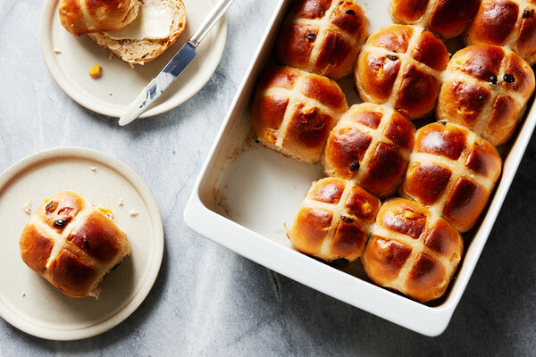

Hot Cross Buns

With their signature crossed tops, these lightly spiced buns are a delicious symbol of the Easter season.
Ingredients
- 1¼ cups whole milk
- 2¼ teaspoons active dry yeast
- ¼cup granulated sugar, plus 1 teaspoon
- 3⅔ cups bread flour, plus more if needed
- 1 teaspoon ground cinnamon
- 1 teaspoon ground cardamom
- 1 teaspoon fine salt
- 4 tablespoons unsalted butter
- 1 large egg
- ¾ cup raisins
- ½ cup diced candied orange peel
Steps
- Make the dough: Heat the milk in a small saucepan over medium until steaming. Remove from the heat. Transfer 1/4 cup/60 grams hot milk to a small bowl and let cool to 110 to 115 degrees if needed, about 1 minute. It should feel lukewarm if you stick your finger in it. Stir in the yeast and 1 teaspoon sugar. Let stand until foamy, about 5 minutes. If the yeast doesn’t foam, it’s dead and won’t help the dough rise. (You’ll have to buy some more and start over if this happens.)
- Meanwhile, whisk the remaining 1/4 cup sugar with the flour, cinnamon, ginger, cardamom and salt in a large bowl or the bowl of a stand mixer. Add the butter to the milk in the saucepan and stir until it melts.
- When the butter has melted and the milk mixture is lukewarm, pour it into the dry ingredients, along with the yeast mixture and egg. If using a stand mixer, beat with the dough hook on medium-low speed until a smooth elastic ball forms, scraping the bowl and hook occasionally, about 10 minutes. The dough should feel sticky but not stick to your hands. If working by hand, mix the ingredients with your hand until a shaggy dough forms, then knead in the bowl to form a shaggy ball. Transfer to a work surface and continue kneading until smooth and elastic, about 15 minutes. You shouldn’t need to flour your surface, but, if the dough is sticking to it, lightly flour as needed.
- Add the raisins and candied orange peel to the dough and knead them in until evenly distributed. Form the dough into a ball.
- Generously butter a clean large bowl and transfer the dough ball to it. Turn the ball to coat with the butter, then cover the bowl with a clean kitchen towel. Let the dough rise in a warm place until doubled, about 1 1/2 hours.
- Butter a 9-by-13-inch cake pan. Turn the dough out onto a clean work surface and divide into 12 even pieces (90 to 100 grams each) with a bench scraper, sharp knife or your hands. Form a piece into a ball by folding it over itself and pulling the stretchy dough over the fruit bits so they’re not sticking out. Once you have a smooth ball, pinch the seam at the bottom shut and place seam side down on the surface. Cup your hand over the ball and move your hand quickly in a circular motion to tighten the ball into a perfect round. Place in the prepared pan. Repeat with the remaining dough and arrange the balls in a 3-by-4 grid, spacing evenly apart. At this point, you can cover the pan tightly in plastic wrap and refrigerate for up to 1 day.
- Open a large, clean unscented produce, recycling or garbage bag and slip the pan into it. Fill a tall glass with hot water, place next to the pan in the bag and tie the bag shut. (This creates a warm, steamy environment for the dough to rise.) Let the balls rise until their sides are touching, about 1½ hours (longer if the dough has been chilled).
- When the dough is almost done rising, heat the oven to 400 degrees.
- Prepare the topping: If using orange blossom water, stir 1½ teaspoons into ¼ cup/60 grams water in a small bowl. Add the flour and stir into a smooth paste. Transfer to a pastry bag or resealable plastic bag and snip a ⅓-inch hole in one corner. Pipe lines across the centers of the balls in one direction and then again in the opposite direction so that each ball has a cross.
- Bake until risen and browned, 20 to 22 minutes. The internal temperature of a center bun should register 190 degrees. While the buns are baking, heat the sugar and 1 tablespoon water in a small saucepan over medium until the sugar dissolves. Remove from the heat and stir in the remaining ¼ teaspoon orange blossom water, if using. As soon as the buns come out of the oven, brush the syrup evenly over them. Serve hot, warm or at room temperature.
Return Home